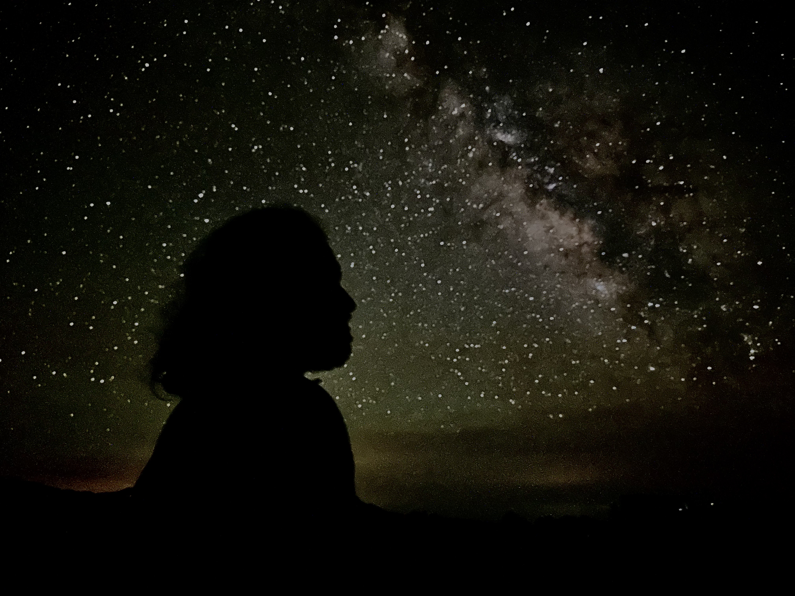

क्या हार में, क्या जीत में, किंचित नहीं भयभीत मैं। कर्तव्य पथ पर जो भी मिला, यह भी सही वो भी सही, वरदान नहीं मांगूंगा, हो कुछ पर हार नहीं मानूंगा। - अटल बिहारी वाजपेयी
Research
 CVCurrent Work
- Open Quantum Systems
- Helical SYK Model in 1+1 Dimensions
- Quantum Phase Transitions
My interests keep changing so feel free to email me if you want to know what I'm working on or check out my arXiv/Scholar.
My ultimate goal is to understand the Quantum Nature of Gravity.
Past Research
- SYK Model
- AdS/CFT and Entanglement Entropy
- SUSY and Quantum Field Theories
- Strings
Resources
Send me an email if you want the presentation/report for anything that interests you.
Talks
- Asymmetry Amplification - Global Physics Summit Anaheim, CA 2025
- Noise-Induced Synchronisation - Physics Research Day 2025
- Asymmetry Amplification - CNLS, Los Alamos National Lab 2024
Short Reviews
- Black Holes as Information Scramblers by Bhavay Tyagi
- A Quantum Theory of Flux Tubes by Bhavay Tyagi